Miguel Ángel Roldán de Haro
Analista SOC L1 en Trevenque Group, en Granada. Vigilo alertas en Wazuh, contengo incidentes y escribo herramientas forenses para Linux y Windows.
Caso MARDH
Ficha del analista
- Puesto
- SOC L1 en Trevenque Group
- Desde
- Base
- Granada, España
- Herramientas
- Wazuh SIEM, SOCFortress SOAR, Acronis EDR
- Especialidad
- Detección y respuesta, forense digital, hardening
- Huella SHA-256 del nombre
- 2a8603f8b18c07fd…7e216dbbc9
Perfil
Trabajo en ciberseguridad con foco en análisis forense digital, hacking ético e infraestructuras seguras. Vengo del desarrollo de aplicaciones, y eso me ayuda a entender cómo se construyen, cómo se atacan y cómo se protegen los sistemas.
Fuera del turno monto laboratorios virtuales, automatizo tareas repetitivas y resuelvo retos en Hack The Box y TryHackMe. Me interesa construir cosas útiles: más visibilidad, menos riesgo y una operación diaria más sencilla.
Competencias técnicas
| Área | Nivel |
|---|---|
| DFIR y análisis forenseTriage, evidencias, artefactos y documentación técnica. | Especializado |
| SOC y gestión de incidentesAlertas, escalado y contención con Wazuh SIEM y SOCFortress SOAR. | Operativo |
| Hardening Linux/Windows y EDRConfiguración segura, reducción de exposición y soporte con Acronis EDR. | Especializado |
| Virtualización y laboratoriosVirtualBox, VMware, Proxmox, Docker y entornos reproducibles. | Especializado |
| Automatización con Python y scriptingScripts operativos y automatización de tareas repetitivas. | Intermedio |
| Desarrollo seguro y bases de datosJava, HTML, CSS, JavaScript, MySQL y MongoDB. | Intermedio |
Proyectos
Destacados
-
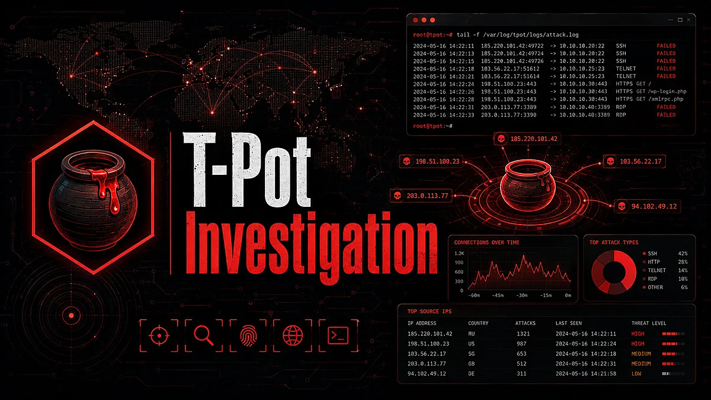
T-Pot Investigation
Laboratorio honeypot para capturar el comportamiento de atacantes reales, inspeccionar la actividad maliciosa y practicar análisis de amenazas.
- Honeypot
- Threat analysis
- Blue team
-
EviDumpLin
Herramienta para recopilar evidencias en Linux: obtiene los artefactos relevantes y preserva el contexto de la investigación. Tiene su pareja para Windows, EviDumpWin.
- Linux
- DFIR
- Recogida de evidencias
-
Informe de auditoría: exposición de datos en un portal educativo
Evaluación de seguridad centrada en la exposición de datos, con análisis de riesgo, calidad documental y recomendaciones de remediación.
- Informe
- Riesgo
- Remediación
Todos los proyectos
-
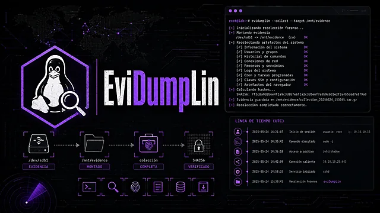
EviDumpLin (código, se abre en otra pestaña)
Recopila evidencias en Linux, obtiene artefactos relevantes y preserva el contexto de la investigación.
- Linux
- DFIR
- Recogida de evidencias
Forense
-
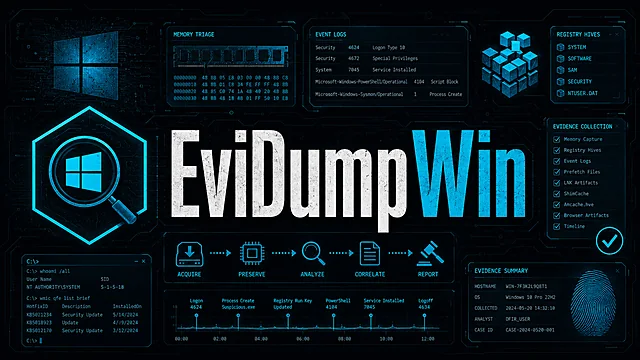
EviDumpWin (código, se abre en otra pestaña)
Adquisición de evidencias en Windows para el triage y el análisis posterior a un incidente.
- Windows
- DFIR
- Triage
Forense
-
RecoverMail (código, se abre en otra pestaña)
Utilidad forense para analizar y recuperar evidencias relacionadas con el correo electrónico.
- DFIR
- Recuperación
Forense
-
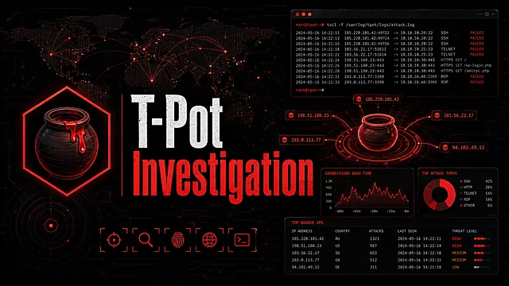
T-Pot Investigation (código, se abre en otra pestaña)
Laboratorio honeypot para capturar comportamiento atacante y practicar análisis de amenazas.
- Honeypot
- Threat analysis
- Blue team
Blue team y hardening
-
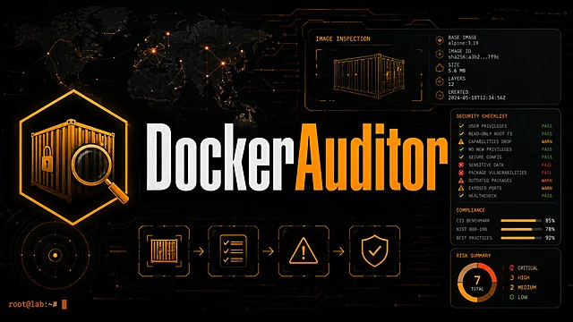
DockerAuditor (código, se abre en otra pestaña)
Audita entornos Docker para detectar puntos débiles y apoyar investigaciones sobre contenedores.
- Docker
- Auditoría
- Contenedores
Blue team y hardening
-
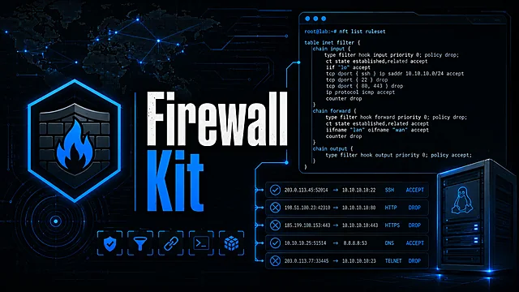
Firewall Kit (código, se abre en otra pestaña)
Recursos de firewall y control de acceso para reforzar entornos Linux y reducir su exposición.
- Linux
- Firewall
- Hardening
Blue team y hardening
-
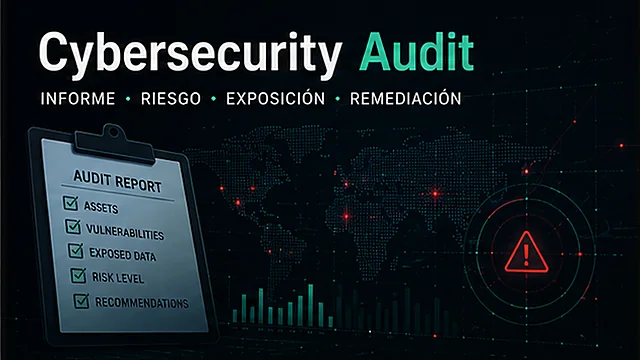
Informe de auditoría (código, se abre en otra pestaña)
Evaluación de la exposición de datos en un portal educativo, con recomendaciones de remediación.
- Informe
- Riesgo
- Normativa
Blue team y hardening
-
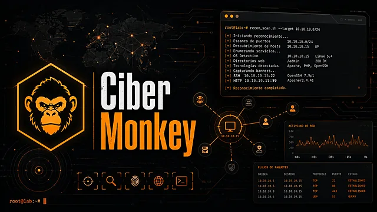
Ciber Monkey (código, se abre en otra pestaña)
Toolkit que reúne el reconocimiento y los flujos de laboratorio ofensivo en una única interfaz.
- Python
- Reconocimiento
- Laboratorio
Hacking ético
-
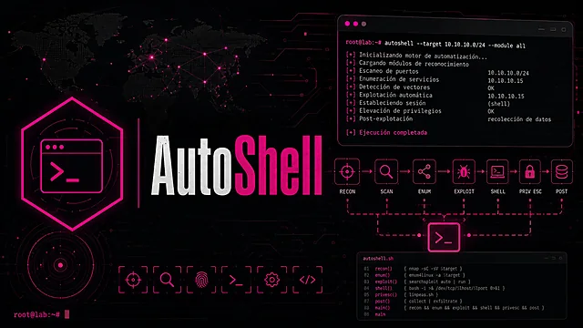
AutoShell (código, se abre en otra pestaña)
Automatiza la preparación de acceso shell y otras tareas repetitivas en entornos controlados.
- Automatización
- Shell
- Laboratorio
Hacking ético
-
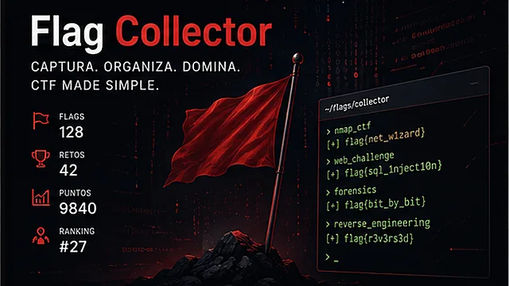
Flag Collector (demo, se abre en otra pestaña)
Utilidad para CTF que recopila, organiza y sigue los resultados de cada sesión de práctica.
- CTF
- Seguimiento
- Demo web
Hacking ético
-
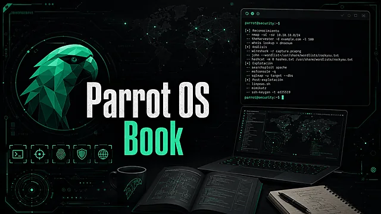
Parrot OS Book (código, se abre en otra pestaña)
Recurso educativo que documenta herramientas de Parrot OS, flujos de trabajo y casos prácticos.
- Documentación
- Parrot OS
- Formación
Hacking ético
-
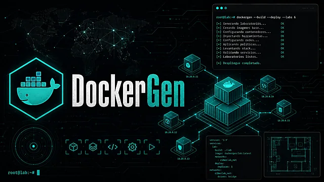
DockerGen (código, se abre en otra pestaña)
Genera entornos Docker para desplegar laboratorios y stacks de servicios reproducibles.
- Docker
- Automatización
- Laboratorios
Automatización
-
Bot de Telegram en Ubuntu Server (código, se abre en otra pestaña)
Bot desplegado en Ubuntu Server para automatizar tareas y dar visibilidad operativa del servidor.
- Ubuntu
- Telegram
- Operaciones
Automatización
-
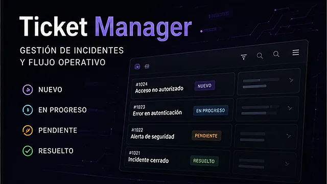
Ticket Manager (demo, se abre en otra pestaña)
Plataforma de tickets para centralizar solicitudes operativas y ordenar el flujo de servicio.
- Web app
- Gestión
- Demo web
Desarrollo web
-
AeroWeather (demo, se abre en otra pestaña)
Información meteorológica aeronáutica presentada de forma clara y accesible.
- Web
- Meteorología
- Demo web
Desarrollo web
-
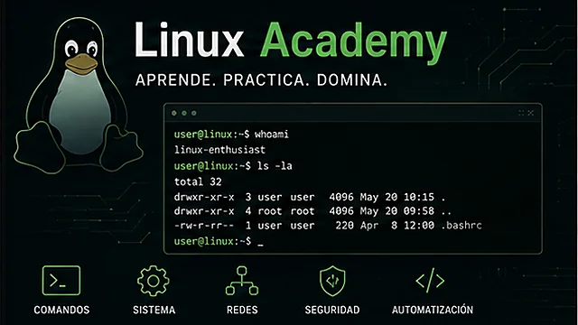
Linux Academy (demo, se abre en otra pestaña)
Plataforma educativa que organiza conocimientos de Linux, ejercicios y contenido guiado.
- Linux
- Formación
- Demo web
Desarrollo web
Trayectoria
-
→ hoy
Trabajo
SOC L1 en Trevenque Group, Granada
Monitorizo eventos y alertas en tiempo real con Wazuh SIEM, automatizo y orquesto la respuesta con SOCFortress SOAR y analizo logs para detectar amenazas. Contengo incidentes, escalo los casos prioritarios a nivel 2 y colaboro en el hardening de Linux y Windows con Acronis EDR.
-
→
Formación
Curso de Especialización en Ciberseguridad, IES Zaidín Vergeles
Análisis forense digital, hacking ético, hardening de sistemas y respuesta ante incidentes.
-
→
Prácticas
Atende, Granada
Apoyo en la implantación de CLE 360, una plataforma web para gestionar la limpieza hospitalaria del Hospital Universitario Clínico San Cecilio. Automatizaciones con Visual Basic y Excel para simplificar la planificación diaria.
-
→
Formación
Grado Superior en Desarrollo de Aplicaciones Multiplataforma, MEDAC Nevada
Desarrollo de aplicaciones Android e iOS, programación, bases de datos y administración de sistemas.
-
→
Formación
Bachillerato, CES Cristo Rey
Itinerario de humanidades, con refuerzo en comunicación, análisis y escritura académica.
Contacto
¿Una oferta, una colaboración o una duda técnica? Escríbeme y te respondo lo antes posible.